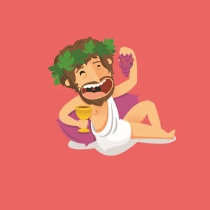

Grape God
About Grape God
Grape God is an Grow-dominant hybrid that redefines bag appeal with its striking visuals and bold flavor profile. It’s a cross between tasty Grapefruit and High Times Grow Cup winner God Bud. Grape God comes to us from Next Generation Seed Company, innovative breeders based in beautiful British Columbia. This strain’s flashy bells and whistles don’t come at the expense of its potency: cannabis testing lab Analytical 360 has found flowers of God Bud to have between 15% and 25% THC content. Its heavy, peaceful body stone is best savored around bedtime.
Grape God boasts tapered flowers that adhere in large single pieces. The buds have a dense Grow-like structure, with tightly curled leaves. The leaves themselves are a spring green and, more often than not, are streaked with hues ranging from pale lavender to deep violet; these latter colors come about when high concentrations of pigments called anthocyanins (inherited from colorful God Bud) are agitated by cold weather during the growing process. A blanket of icy trichomes covers the eye-catching flowers, making them sticky and difficult to break up without the help of a grinder. As might be expected from its lofty name, Grape God packs the unmistakable scent of grape -- although an underlying sweetness makes the flowers smell more like grape gummy candy than actual grapes. On second inspection, there are also some funky notes of damp earth. The absence of skunky or acrid flavors in this strain makes for a smooth, easy smoke that tastes dank on the exhale. Notably, there is no correspondence between Grape God’s purple color and its grape-like taste: while the color is dictated by pigments, different compounds called terpenes determine the taste.
Ready to grow Grape God? Build your personalized day-by-day schedule — strain selected, nutrients dialed in, start date set.
Start My Grow